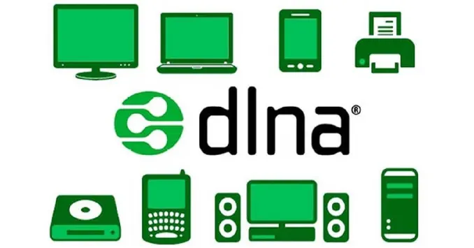
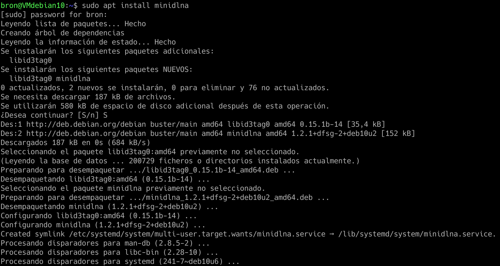
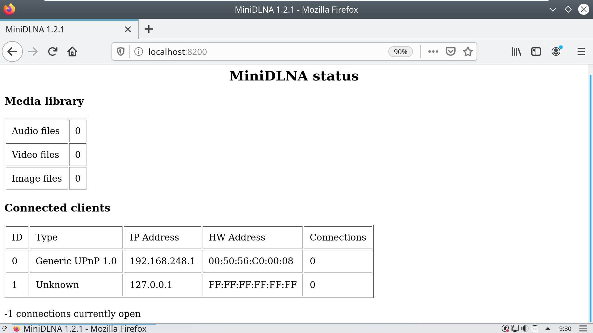

28 июня 2021 Мэтт Миллс Как записаться 0
В настоящее время делиться мультимедийным контентом с устройствами в нашем доме проще, чем когда-либо, мы можем делиться контентом с нашего NAS-сервера или напрямую с Linux-на основе сервера, установка программы miniDLNA, которая позволит нам легко обмениваться контентом. Сервер DLNA позволит нам передавать аудио, видео и фотографии на телевизоры, смартфоны, планшеты и любые устройства с экраном. Этот контент можно воспроизводить на любом устройстве, совместимом с UPnP / DLNA. Сегодня в этой статье мы покажем вам, как настроить наш сервер DLNA на любом сервере Linux.

Содержание [show]
В настоящее время подавляющее большинство маршрутизаторов с USB-портом имеют медиа-сервер DLNA, это означает, что, если мы подключим внешний жесткий диск или флешку, мы сможем воспроизводить мультимедийный контент на любом устройстве, подключенном к домашней локальной сети, без необходимость ничего не делать. Однако возможно, что наш маршрутизатор недостаточно мощный для выполнения этой задачи, тем более, что для чтения фильма или сериала, который мы собираемся воспроизвести, используется много процессора, и, в зависимости от битрейта мультимедийного контента, он может не хватить. По этой причине наиболее распространенным является использование внешнего сервера DLNA на любом сервере на базе Linux, таком как Debian на NAS, Raspberry Pi или любое устройство.
Для всего этого нам будет служить DLNA-сервер на сервере с операционной системой Linux:
По логике вещей необходимо, чтобы все устройства были совместимы с сервером DLNA, который мы собираемся установить.
Одним из наиболее широко используемых серверов DLNA является популярный миниDLNA , который совместим со многими операционными системами и практически со всеми устройствами. В нашем случае это тот, который всегда давал нам лучший результат, хотя есть и другие, такие как Fuppes, которые также работают очень хорошо (интегрированы в XigmaNAS-ориентированную операционную систему NAS). Другими широко используемыми серверами DLNA являются, например, Plex Media Server, который не только включает Plex, но и встроенный сервер DLNA для тех телевизоров, которые несовместимы с вашим приложением.
Основными характеристиками miniDLNA является то, что это сервер DLNA, который потребляет очень мало ресурсов, как на ЦП и Оперативная память На уровне, все будет работать очень быстро, а загрузка процессора будет как раз при чтении мультимедийного содержимого внешнего диска. Этот сервер DLNA может быть установлен на любом Linux, независимо от оборудования, хотя по логике нам нужно, чтобы он был чем-то мощным, чтобы не было никаких проблем, и мы должны учитывать его потребление электроэнергии, потому что он будет активирован 24 часа в сутки. . Другие характеристики заключаются в том, что он имеет действительно простую конфигурацию, но очень важная деталь заключается в том, что он не позволяет перекодировать аудио и / или видео, таким образом, мы должны убедиться, что наш телевизор поддерживает различные существующие видеоформаты.
В этой статье мы использовали miniDLNA более 5 лет, и за все это время у нас не было никаких проблем с воспроизведением мультимедийного контента, за исключением тех старых телевизоров, которые не поддерживают новые видеокодеки, такие как H.265, но если ваш телевизор новый (относительно), у вас не должно возникнуть проблем. +
Программа miniDLNA настолько хорошо известна, что у нас есть она доступна в официальных репозиториях основных дистрибутивов GNU / Linux, поэтому она будет у нас через диспетчер пакетов. В этом руководстве мы использовали Debian 10, но вы можете использовать любую версию, например Ubuntu, Linux Mint или любой другой дистрибутив, потому что все они работают одинаково.
Первое, что нужно сделать, это установить miniDLNA со всеми ее зависимостями:
sudo apt install minidlna

После установки запускаем службу miniDLNA:
Автоматически эта служба запускается вместе с операционной системой, нам не нужно делать абсолютно ничего другого, как вы можете видеть, когда мы добавляем:
sudo service minidlna status
Этот сервер DLNA настраивается с помощью одного файла конфигурации, который нам придется редактировать, поэтому он значительно облегчает его настройку и запуск, потому что нам не нужно будет редактировать несколько, а только один. Для его редактирования мы будем использовать любой текстовый редактор, обычно используется vim или nano, в нашем случае мы будем использовать nano.
sudo nano /etc/minidlna.conf
В самом файле конфигурации у нас будет вся необходимая документация для запуска сервера DLNA, но в этой статье мы подробно объясним, как его настроить, поскольку он поставляется на английском языке. Важной деталью является то, что у нас есть справочная страница (руководство) медиа-сервера miniDLNA, поэтому мы можем получить больше информации об операции.
man minidlna
Первое, что нам нужно узнать, это загрузить источники мультимедийного контента, в зависимости от того, есть ли у нас видео, аудио или фотографии, синтаксис будет следующим:
media_dir=A,/home/bron/multimedia/audio
media_dir = P, / home / bron / multimedia / фотографии
media_dir = V, / главная / броня / мультимедиа / видео
Как видите, если мы хотим загрузить «A» - это звук, P - это фотографии, а V - видео, таким образом, на телевидении он будет выглядеть идеально классифицированным. Если мы хотим, чтобы появились видео и фотографии, мы также могли бы это сделать, что идеально подходит для камер, которые также записывают видео:
media_dir=PV,/home/bron/multimedia/camara_fotos
Еще одно предложение, которое мы должны настроить, - где хранить базу данных DLNA, в этом случае это делается раскомментированием следующей строки:
db_dir=/var/cache/minidlna
То же самое происходит с каталогом журналов или регистров, в случае какой-либо ошибки:
log_dir=/var/log/minidlna
Остальные параметры конфигурации можно оставить таким образом:
port 8200
friendly_name = DLNA-сервер
inotify = да
уведомить_интервал = 30
У нас есть все операторы, уже написанные в файле конфигурации, но они прокомментированы, поэтому мы должны раскомментировать их, чтобы они активировались. После того, как мы его настроили, мы сохраняем файл конфигурации и приступаем к перезагрузке сервера DLNA, чтобы он правильно применил изменения.
sudo service minidlna restart
Как только мы все это сделаем, мы сможем получить доступ к нашему телевизору или смартфону и протестировать медиа-сервер DLNA.
Во всех операционных системах Linux брандмауэр всегда работает, обычно на основе iptables, но по умолчанию у нас есть «разрешить все», поэтому вам не нужно создавать какие-либо дополнительные правила для доступа к медиа-серверу DLNA. Если вы настроили брандмауэр iptables в ограничительном режиме с «запретить все», вам придется ввести два правила для его правильной работы.
iptables -A INPUT -p tcp --dport 8200 -j ACCEPT
iptables -A INPUT -p udp –dport 1900 -j ПРИНЯТЬ
Мы предполагаем, что у вас есть только один сетевой интерфейс и одна подсеть, в случае, если вы хотите фильтровать по порту или подсети, вам нужно будет добавить это, это правило разрешает локальный доступ только к двум портам, определенным выше.
Если вы хотите, чтобы эти правила в брандмауэре сохранялись, вам нужно будет выполнить следующую команду:
iptables-save > /etc/iptables/rules.v4
Теперь мы можем проверить, все ли правильно работает с тем клиентом DLNA, который нам нужен, например телевизор, смартфон или планшет.
Если мы получим доступ к нашему локальному IP-адресу через Интернет или с любого компьютера и поместим порт 8200, мы получим доступ к веб-интерфейсу статуса miniDLNA. Здесь мы увидим только медиа-библиотеку, количество аудио-, видео- и графических файлов. Мы также сможем увидеть клиентов, которые в настоящее время подключены к медиа-серверу DLNA, с их IP-адресом, MAC-адресом и количеством подключений.
В нашем случае мы положили:
http://localhost:8200

Теперь, когда мы все установили правильно, все, что нам нужно сделать, это найти сервер DLNA в локальной сети. В зависимости от того, какой клиент (устройство) вы используете, вам придется использовать ряд программ:
Во всех этих программах мы должны перейти к «Cеть”И найдите такую опцию, как UPnP или DLNA, и наш недавно настроенный сервер DLNA появится автоматически. Если он не отображается ни на одном устройстве, мы рекомендуем вам проверить брандмауэр iptables, а также, если он активирован.
Как вы видели, установка и настройка сервера DLNA на нашем NAS или сервере Linux очень проста, нам просто нужно установить его и настроить текстовый файл, что не вызовет особых трудностей.